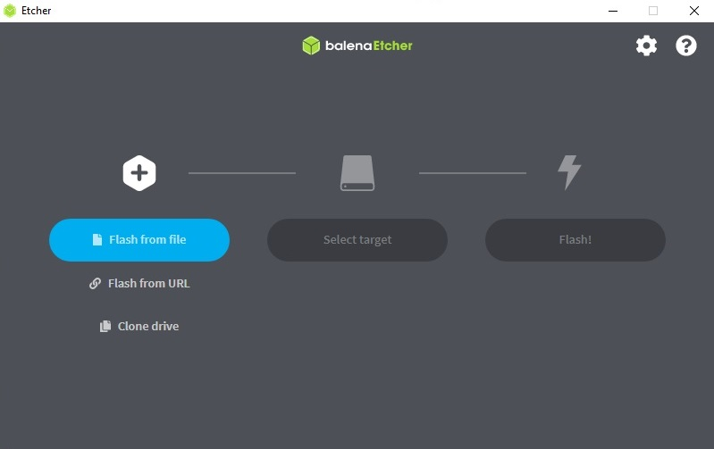

Raspberry Pi model 3
DC power supply
32GB MicroSD card
USB keyboard
Generic bluetooth gaming controller
TV set with HDMI input
The Retropi files are stored in one large image, and we have to get that image onto the memory card.
1. First we need to download a program that can decompress and write the img.gz file onto the memory card, gz (GZip) is a file compression system used on Unix & Linux systems. There are several programs that can do this, but for our purposes we'll use one called balenaEtcher which comes in versions for Windows and OsX.
Select. Save file. Install this - open file, agree to conditions, install.
2. Now we need the Retropi image. We can go to the Retropi download page here:
RetroPie Download PageI'm using a Raspberry Pi 3, so click on the Raspberry Pi 2/3 button.
Save this file. The file I downloaded is 842 meg compressed.
3. Open up Balena Etcher. Select Flash From File and navigate to the image you just downloaded. Select. then open. Now you need to select a target device. Your computer may have an internal card reader, but for this demonstration I've put a microSD card into a USB card reader. This is being read as a USB storage device in Windows. So, select target, highlight mass storage usb device and press the select button. Finally press the Flash button and select yes for any Windows User Account Control prompts that might pop up. The FLashing program will now write the files to the card. This will take a few minutes. After writing, Etcher will do a validation step where it checks the content has no errors.
4. Once copying is complete you should now have a microsd card that is bootable by the Pi. This won't be easily accessible in Windows and may give errors telling you to format.
5. Insert in Pi with card and connect dongle for controller and usb keyboard. Then you can boot up the Pi.
6. If all goes well then a cut-down Raspbian Linux will load showing the familiar text boot sequence and run the Emulation Station emulation software and the RetroArch front end.
7. For the next step an input device needs to be configured
I'm using this cheap and cheerful Bluetooth controller. While the Pi is loading turn on the controller by holding down Select and Home until the Home button light turns a solid red.
When Retropie loads a Gamepad detected screen pops up. Hold down a button on the controller then go through the confguration process assigning the different buttons. This is saved in a file on the SD card so only has to be done once - although it can be changed at any time in the main menu. It is also possible to hold down a key on the usb keyboard here and use the keyboard as a controller. I haven't done this step for now, but it can be useful on certain systems such as the ZX Spectrum that often use key controls instead of a joystick.
Once the controller is configured, Retropie will display the main RetroArch front end. Initially there's nothing there other than the RetroPie configuration option. Time for some ROMS.
A note on ROMs:
For the purposes of this example, I obtained various rom files from the Internet Archive. There are many other sites which can be found with a search engine of your choice
You can put ROMs onto the Pi in several ways, perhaps the easiest of which is to use a USB stick with your rom files and copy them over. However one quicker way is to directly transfer the files across a network to the Pi. This is a fairly painless process.
The Pi in the example is connected via ethernet to a powerline plug so is on the same network as my PC running Windows 10.
Step One. On the PC, open an Explorer window and type the following into the address bar:
\\RETROPIE
A network share window will open up that is connected directly to the Pi.
Go into the roms folder and a list of sub-folders will show up, each named after one of the different retro machines the Pi is currently emulating.
Open a folder and copy the roms for that particular machine across.
In the example the ROM for the PC Engine version of R-Type has been copied across. The .srm file is a save state file later added by the pi.
Once the ROM is copied over, go to the Pi, press the start button on the controller, go to Quit in the menu and select Restart Emulationstation, then agree to restart.
After a few seconds a menu option for the system you installed will pop up and your game(s) should now be visible and can be played. Each time you run a game a brief launching window appears and if you press a key on the controller you will be taken to a configuration menu with various options for the emulator type, resolution etc.
Menu screen for ZX Spectrum game
R-Type Horizontal shooter on the PC Engine (aka the TurboGrafx-16)
To take a screenshot of the current game, press the controller Hotkey and the X button and you're transported to a menu with the screenshot option. The pictures are located in all/retroarch/screenshots which can also be accessed from the network share via \\RETROPIE\configs\all\retroarch\screenshots.
Troubleshooting: Emulators have a lot of configuration options - some will pretty much work straight out of the box, others might require some tweaking. The easiest strategy is to save one or two compatible ROMs for your target machine in the relevant directory, then try to run them and note any issues. In most cases this will be something simple like a controller button needs to be remapped, but on occasion more work is needed. This page only gives a basic guide, but there are many resources and communities online who can provide the solution to any issues.
The best place to start with a more comprehensive guide to the software is the Retropie documents page which covers the topics here in much more detail. There's also a Retropie wiki with dozens of detailed articles.
Additional information: In this example keyboard input is via a USB keyboard of the sort that is used with a PC. Some older computers also have mouse input. While it is possible to also connect a mouse and configure it, for creating a quick retro games setup a more general solution might be to use a wireless input device such as the already mentioned Rii mini i8 unit. This plugs in via its own bluetooth dongle and has keyboard functions, a touchpad and mousekeys & is a commonly sold unit to control set-top boxes or smart TVs.